Продолжаем изучать многочлены. В данном уроке мы научимся их делить.
Деление многочлена на одночлен
Чтобы разделить многочлен на одночлен, нужно разделить на этот одночлен каждый член многочлена, затем сложить полученные частные.
Например, разделим многочлен 15x2y3 + 10xy2 + 5xy3 на одночлен xy. Запишем это деление в виде дроби:
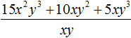
Теперь делим каждый член многочлена 15x2y3 + 10xy2 + 5xy3 на одночлен xy. Получающиеся частные будем складывать:
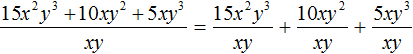
Получили привычное для нас деление одночленов. Выполним это деление:
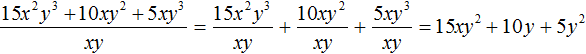
Таким образом, при делении многочлена 15x2y3 + 10xy2 + 5xy3 на одночлен xy получается многочлен 15xy2 + 10y + 5y2.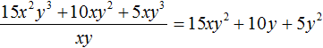
При делении одного числа на другое, частное должно быть таким, чтобы при его перемножении с делителем, получалось делимое. Это правило сохраняется и при делении многочлена на одночлен.
В нашем примере произведение полученного многочлена 15xy2 + 10y + 5y2 и делителя xy должно быть равно многочлену 15x2y3 + 10xy2 + 5xy3, то есть исходному делимому. Проверим так ли это:
(15xy2 + 10y + 5y2)xy = 15x2y3 + 10xy2 + 5xy3
Деление многочлена на одночлен очень похоже на сложение дробей с одинаковыми знаменателями. Мы помним, что для сложения дробей с одинаковыми знаменателями, нужно сложить их числители, а знаменатель оставить без изменений.
Например, чтобы сложить дроби  ,
,  и
и  нужно записать следующее выражение:
нужно записать следующее выражение:
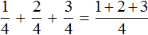
Если мы вычислим выражение
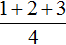
, то получим дробь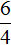
, значение которой равно 1,5.При этом выражение мы можем вернуть в исходное состояние
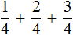
, и вычислить по отдельности каждую дробь, затем сложить полученные частные. Результат по прежнему будет равен 1,5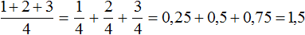
Тоже самое происходит при делении многочлена на одночлен. Одночлен берёт на себя роль общего знаменателя для всех членов многочлена. Например, при делении многочлена ax + bx + cx на многочлен x, образуется три дроби с общим знаменателем x
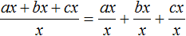
Вычисление каждой дроби даст в результате многочлен a + b + c
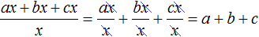
Пример 2. Разделить многочлен 8m3n + 24m2n2 на одночлен 8m2n
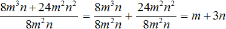
Пример 3. Разделить многочлен 4c2d − 12c4d3 на одночлен −4c2d
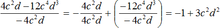
Деление одночлена на многочлен
Не существует тождественного преобразования, позволяющего разделить одночлен на многочлен.
Допустим, мы захотели разделить одночлен 2xy на многочлен 5x + 3y + 5.
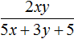
Результатом этого деления должен быть многочлен, перемножение которого с многочленом 5x + 3y + 5 даёт одночлен 2xy. Но не существует многочлена, перемножение которого с многочленом 5x + 3y + 5 давало бы в результате одночлен 2xy, поскольку перемножение многочленов даёт в результате многочлен, а не одночлен.
Но в учебниках можно встретить задания на нахождение значения выражения при заданных значениях переменных. В исходных выражениях таких заданий бывает выполнено деление одночлена на многочлен. В этом случае никаких преобразований выполнять не нужно. Достаточно подставить значения переменных в исходное выражение и вычислить получившееся числовое выражение.
Например, найдём значение выражения
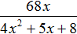
при x = 2.Выражение представляет собой деление одночлена на многочлен. В данном случае мы не сможем выполнить какие-либо преобразования. Единственное, что мы сможем сделать — это подставить число 2 в исходное выражение вместо переменной x и найти значение выражения:
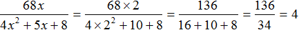
Деление многочлена на многочлен
Если первый многочлен умножить на второй многочлен, получается третий многочлен. Например, если умножить многочлен x + 5 на многочлен x + 3, получается многочлен x2 + 8x + 15
(x + 5)(x + 3) = x2 + 5x + 3x + 15 = x2 + 8x + 15
(x + 5)(x + 3) = x2 + 8x + 15
Если произведение разделить на множитель, то получится множимое. Это правило распространяется не только для чисел, но и для многочленов.
Тогда согласно этому правилу, деление полученного нами многочлена x2 + 8x + 15 на многочлен x + 3 должно давать в результате многочлен x + 5.
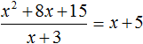
Деление многочлена на многочлен выполняется уголком. Отличие будет в том, что при делении многочленов не нужно определять первое неполное делимое, как в случае деления обычных чисел.
Выполним уголком деление многочлена x2 + 8x + 15 на многочлен x + 3. Так мы поэтапно увидим, как получается многочлен x + 5.
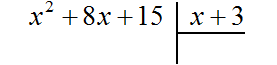
В данном случае результат нам известен заранее. Это будет многочлен x + 5. Но чаще всего результат бывает неизвестным. Поэтому решение будем комментировать так, будто результат нам неизвестен.
Результатом деления должен быть новый многочлен. Члены этого многочлена будут появляться один за другим в процессе деления.
Сейчас наша задача найти первый член нового многочлена. Как это сделать?
Когда мы изначально перемножали многочлены x + 5 и x + 3, мы сначала умножили первый член первого многочлена на первый член второго многочлена. Тем самым мы получили первый член третьего многочлена:
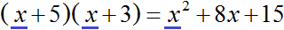
Если мы обратно разделим первый член третьего многочлена на первый член второго многочлена, то получим первый член первого многочлена. А это то, что нам нужно. Ведь мы должны прийти к многочлену x + 5.
Этот же принцип нахождения первого члена будет выполняться и при решении других задач на деление многочленов.
Итак, чтобы найти первый член нового многочлена, нужно первый член делимого разделить на первый член делителя.
Если первый член делимого (в нашем случае это x2) разделить на первый член делителя (это x), получится x. То есть первым членом нового многочлена является x. Записываем его под правым углом:
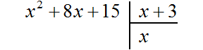
Теперь, как и при делении обычных чисел, умножаем x на делитель x + 3. На этом этапе нужно суметь умножить одночлен на многочлен. При умножении x на x + 3, получается x2 + 3x. Записываем этот многочлен под делимым x2+ 8x+ 15 так, чтобы подобные члены располагались друг под другом:
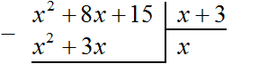
Теперь из делимого x2 + 8x + 15 вычитаем x2 + 3x. Подобные члены вычитаем из подобных им членов. Если из x2 вычесть x2, получится 0. Ноль не записываем. Далее если из 8x вычесть 3x, получится 5x. Записываем 5x так, чтобы этот член оказался под членами 3x и 8x
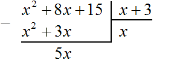
Теперь, как и при делении обычных чисел, сносим следующий член делимого. Следующий член это 15. Сносить его нужно вместе со своим знаком:
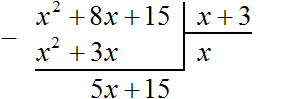
Теперь делим многочлен 5x + 15 на x + 3. Для этого нужно найти второй член нового многочлена. Чтобы его найти, нужно первый член делимого (сейчас это член 5x) разделить на первый член делителя (это член x). Если 5x разделить на x, получится 5. То есть вторым членом нового многочлена является 5. Записываем его под правым углом, вместе со своим знаком (член 5 в данном случае положителен)
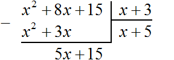
Теперь умножаем 5 на делитель x + 3. При умножении 5 на x + 3, получается 5x + 15. Записываем этот многочлен под делимым 5x + 15
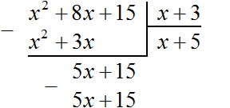
Теперь из делимого 5x + 15 вычитаем 5x + 15. Если из 5x + 15 вычесть 5x + 15 получится 0.
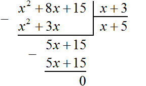
На этом деление завершено.
После выполнения деления можно выполнить проверку, умножив частное на делитель. В нашем случае, если частное x + 5 умножить на делитель x + 3, должен получаться многочлен x2 + 8x + 15
(x + 5)(x + 3) = x2 + 5x + 3x + 15 = x2 + 8x + 15
Пример 2. Разделить многочлен x2 − 8x + 7 на многочлен x − 7
Записываем уголком данное деление:
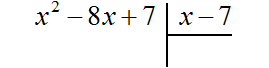
Находим первый член частного. Разделим первый член делимого на первый член делителя, получим x. Записываем x под правым углом:
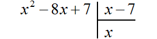
Умножаем x на x − 7, получаем x2 − 7x. Записываем этот многочлен под делимым x2 − 8x + 7 так, чтобы подобные члены располагались друг под другом:
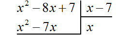
Вычитаем из x2 − 8x + 7 многочлен x2 − 7x. При вычитании x2 из x2 получается 0. Ноль не записываем. А при вычитании −7x из −8x получается −x, поскольку −8x − (−7x) = −8x + 7x = −x. Записываем −x под членами −7x и −8x. Далее сносим следующий член 7
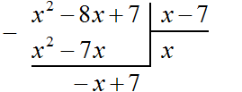
Следует быть внимательным при вычитании отрицательных членов. Часто на этом этапе допускаются ошибки. Если на первых порах вычитание в столбик даётся тяжело, то можно использовать обычное вычитание многочленов в строку, которое мы изучили ранее. Для этого нужно отдельно выписать делимое и вычесть из него многочлен, который под ним располагается. Преимущество этого метода заключается в том, что следующие члены делимого сносить не нужно — они автоматически перейдут в новое делимое. Давайте воспользуемся этим методом:
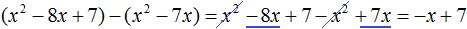
Вернёмся к нашей задаче. Разделим многочлен −x + 7 на x − 7. Для этого нужно найти второй член частного. Чтобы его найти, нужно первый член делимого (сейчас это член −x) разделить на первый член делителя (это член x). Если −x разделить на x, получится −1. Записываем −1 под правым углом вместе со своим знаком:
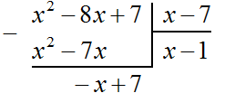
Умножаем −1 на x − 7, получаем −x + 7. Записываем этот многочлен под делимым −x + 7
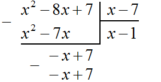
Теперь из −x + 7 вычитаем −x + 7. Если из −x + 7 вычесть −x + 7 получится 0
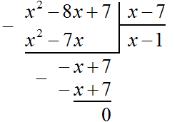
Деление завершено. Таким образом, частное от деления многочлена x2 − 8x + 7 на многочлен x − 7 равно x − 1
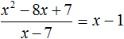
Выполним проверку. Умножим частное x − 1 на делитель x − 7. У нас должен получиться многочлен x2 − 8x + 7
(x − 1)(x − 7) = x2 − x − 7x + 7 = x2 − 8x + 7
Пример 3. Разделить многочлен x6 + 2x4 + x7 + 2x5 на многочлен x2 + x3
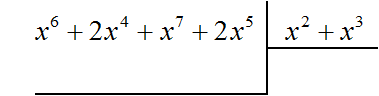
Найдём первый член частного. Разделим первый член делимого на первый член делителя, получим x4
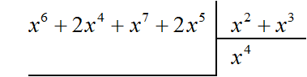
Умножаем x4 на делитель x2 + x3 и полученный результат записываем под делимым. Если x4 умножить на x2 + x3 получится x6 + x7. Члены этого многочлена записываем под делимым так, чтобы подобные члены располагались друг под другом:
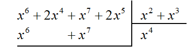
Теперь из делимого вычитаем многочлен x6 + x7. Вычитание x6 из x6 даст в результате 0. Вычитание x7 из x7 тоже даст в результате 0. Оставшиеся члены 2x4 и 2x5 снесём:
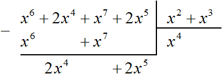
Получилось новое делимое 2x4 + 2x5. Это же делимое можно было получить, выписав отдельно многочлен x6 + 2x4 + x7 + 2x5 и вычтя из него многочлен x6 + x7
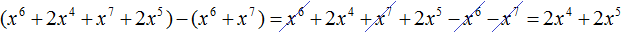
Разделим многочлен 2x4 + 2x5 на делитель x2 + x3. Как и раньше сначала делим первый член делимого на первый член делителя, получим 2x2. Записываем этот член в частном:
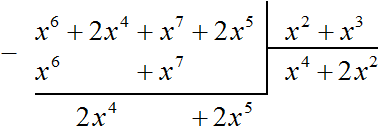
Умножаем 2x2 на делитель x2 + x3 и полученный результат записываем под делимым. Если 2x2 умножить на x2 + x3 получится 2x4 + 2x5. Записываем члены этого многочлена под делимым так, чтобы подобные члены располагались друг под другом. Затем выполним вычитание:
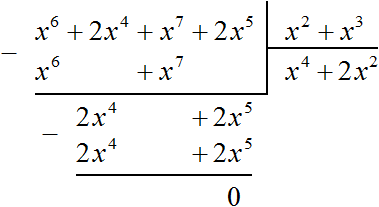
Вычитание многочлена 2x4 + 2x5 из многочлена 2x4 + 2x5 дало в результате 0, поэтому деление успешно завершилось.
В промежуточных вычислениях члены нового делимого располагались друг от друга, образуя большие расстояния. Это было по причине того, что при умножении частного на делитель, результаты были записаны так, чтобы подобные члены располагались друг под другом.
Эти расстояния между членами нового делимого образуются тогда, когда члены исходных многочленов расположены беспорядочно. Поэтому перед делением желательно упорядочить члены исходных многочленов в порядке убывания степеней. Тогда решение примет более аккуратный и понятный вид.
Решим предыдущий пример, упорядочив члены исходных многочленов в порядке убывания степеней. Если члены многочлена x6 + 2x4 + x7 + 2x5 упорядочить в порядке убывания степеней, то получим многочлен x7 + x6 + 2x5 + 2x4. А если члены многочлена x2 + x3 упорядочить в порядке убывания степеней, то получим многочлен x3 + x2
Тогда деление уголком многочлена x6 + 2x4 + x7 + 2x5 на многочлен x2 + x3 примет следующий вид:
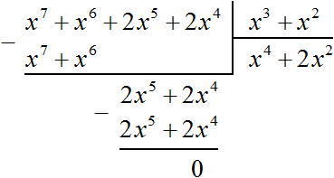
Деление завершено. Таким образом, частное от деления многочлена x6 + 2x4 + x7 + 2x5 на многочлен x2 + x3 равно x4 + 2x2
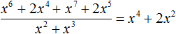
Выполним проверку. Умножим частное x4 + 2x2 на делитель x2 + x3. У нас должен получиться многочлен x6 + 2x4 + x7 + 2x5
(x4 + 2x2)(x2 + x3) = x4 (x2 + x3) + 2x2(x2 + x3) = x6 + 2x4 + x7 + 2x5
При перемножении многочленов члены исходных многочленов тоже желательно упорядочивать в порядке убывания степеней. Тогда члены полученного многочлена тоже будут упорядочены в порядке убывания степеней.
Перепишем умножение (x4 + 2x2)(x2 + x3) упорядочив члены многочленов в порядке убывания степеней.
(x4 + 2x2)(x3 + x2) = x4(x3 + x2) + 2x2(x3 + x2) = x7 + x6 + 2x5 + 2x4
Пример 4. Разделить многочлен 17x2 − 6x4 + 5x3 − 23x + 7 на многочлен 7 − 3x2 − 2x
Упорядочим члены исходных многочленов в порядке убывания степеней и выполним уголком данное деление:
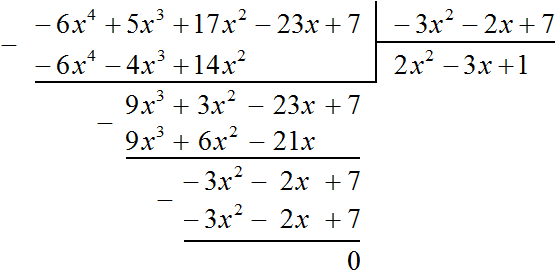
Значит,
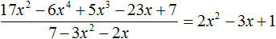
Пример 5. Разделить многочлен 4a4 − 14a3b − 24a2b2 − 54b4 на многочлен a2 − 3ab − 9b2
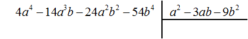
Найдем первый член частного. Разделим первый член делимого на первый член делителя, получим 4a2. Записываем 4a2 в частном:
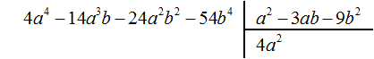
Умножим 4a2 на делитель a2 − 3ab − 9b2 и полученный результат запишем под делимым:
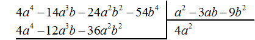
Вычтем из делимого полученный многочлен 4a4 − 12a3b − 36a2b2
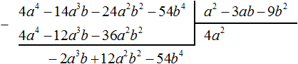
Теперь делим −2a3b + 12a2b2 − 54b4 на делитель a2 − 3ab − 9b2. Разделим первый член делимого на первый член делителя, получим −2ab. Записываем −2ab в частном:
Умножим −2ab на делитель a2 − 3ab − 9b2 и полученный результат запишем под делимым −2a3b + 12a2b2 − 54b4
Вычтем из многочлена −2a3b + 12a2b2 − 54b4 многочлен −2a3b + 12a2b2 − 18ab3. При вычитании подобных членов обнаруживаем, что члены −54b4 и 18ab3 не являются подобными, а значит их вычитание не даст никакого преобразования. В этом случае выполняем вычитание там где это можно, а именно вычтем −2a3b из −2a3b и 6a2b2 из 12a2b2, а вычитание 18ab3 из −54b4 запишем в виде разности −54b4 − (+18ab3) или −54b4 − 18ab3
Этот же результат можно получить, если выполнить вычитание многочленов в строку с помощью скобок:
Вернёмся к нашей задаче. Разделим 6a2b2 − 54b4 − 18ab3 на делитель a2 − 3ab − 9b2. Делим первый член делимого на первый член делителя, получим 6b2. Записываем 6b2 в частном:
Умножим 6b2 на делитель a2 − 3ab − 9b2 и полученный результат запишем под делимым 6a2b2 − 54b4 − 18ab3. Сразу вычтем этот полученный результат из делимого 6a2b2 − 54b4 − 18ab3
Деление завершено. Таким образом, частное от деления многочлена 4a4 − 14a3b − 24a2b2 − 54b4 на многочлен a2 − 3ab − 9b2 равно 4a2 − 2ab + 6b2.
Выполним проверку. Умножим частное 4a2 − 2ab + 6b2 на делитель a2 − 3ab − 9b2. У нас должен получиться многочлен 4a4 − 14a3b − 24a2b2 − 54b4
Деление многочлена на многочлен с остатком
Как и при делении обычных чисел, при делении многочлена на многочлен может образоваться остаток от деления.
Для начала вспомним деление обычных чисел с остатком. Например, разделим уголком 15 на 2. С остатком это деление будет выполнено так:
То есть при делении 15 на 2 получается 7 целых и 1 в остатке. Ответ записывается следующим образом:
Рациональное число  читается как семь целых плюс одна вторая. Знак «плюс» по традиции не записывают. Но если при делении многочлена на многочлен образуется остаток, то этот плюс записывать нужно.
читается как семь целых плюс одна вторая. Знак «плюс» по традиции не записывают. Но если при делении многочлена на многочлен образуется остаток, то этот плюс записывать нужно.
Например, если при делении многочлена a на многочлен b получится частное c, да еще останется остаток q, то ответ будет записан так:
Например, разделим многочлен 2x3 − x2 − 5x + 4 на многочлен x − 3
Найдем первый член частного. Разделим первый член делимого на первый член делителя, получим 2x2. Записываем 2x2 в частном:
Умножим 2x2 на делитель x − 3 и полученный результат запишем под делимым:
Вычтем из делимого полученный многочлен 2x3 − 6x2
Теперь делим 5x2 − 5x + 4 на делитель x − 3. Разделим первый член делимого на первый член делителя, получим 5x. Записываем 5x в частном:
Умножим 5x на делитель x − 3 и полученный результат запишем под делимым 5x2 − 5x + 4
Вычтем из многочлена 5x2 − 5x + 4 многочлен 5x2 − 15x
Теперь делим 10x + 4 на делитель x − 3. Разделим первый член делимого на первый член делителя, получим 10. Записываем 10 в частном:
Умножим 10 на делитель x − 3 и полученный результат запишем под делимым 10x + 4. Сразу вычтем этот полученный результат из делимого 10x + 4
Число 34, полученное в результате вычитания многочлена 10x − 30 из многочлена 10x + 4, является остатком. Мы не сможем найти следующий член частного, который при умножении с делителем x − 3 дал бы нам в результате 34.
Поэтому при делении многочлена 2x3 − 2x2 − 5x + 4 на многочлен x − 3 получается 2x2 + 5x + 10 и 34 в остатке. Ответ записывается таким же образом, как и при делении обычных чисел. Сначала записывается целая часть (она располагается под правым углом) плюс остаток, разделенный на делитель:
Когда деление многочленов невозможно
Деление многочлена на многочлен невозможно в случае, если степень делимого окажется меньше степени делителя.
Например, нельзя разделить многочлен x3 + x на многочлен x4 + x2, поскольку делимое является многочленом третьей степени, а делитель — многочленом четвёртой степени.
Вопреки этому запрету можно попробовать разделить многочлен x3 + x на многочлен x4 + x2, и даже получить частное x−1, которое при перемножении с делителем будет давать делимое:
Но при делении многочлена на многочлен должен получаться именно многочлен, а частное x−1 многочленом не является. Ведь многочлен состоит из одночленов, а одночлен в свою очередь это произведение чисел, переменных и степеней. Выражение x−1 это дробь , которая не является произведением.
Пусть имеется прямоугольник со сторонами 4 и 2
Площадь этого прямоугольника будет равна 4 × 2 = 8 кв.ед.
Увеличим длину и ширину этого прямоугольника на x
Достроим отсутствующие стороны:
Теперь прямоугольник имеет длину x + 4 и ширину x + 2. Площадь этого прямоугольника будет равна произведению (x + 4)(x + 2) и выражаться многочленом x2 + 6x + 8
(x + 4)(x + 2) = x2 + 4x + 2x + 8 = x2 + 6x + 8
При этом мы можем выполнить обратную операцию, а именно разделить площадь x2 + 6x + 8 на ширину x + 2 и получить длину x + 4.
Степень многочлена x2 + 6x + 8 равна сумме степеней многочленов-сомножителей x + 4 и x + 2, а значит ни одна из степеней многочленов-сомножителей не может превосходить степень многочлена-произведения. Следовательно, чтобы обратное деление было возможным, степень делителя должна быть меньше степени делимого.